Nossos Destinos: O Mundo Espera Por Você!
Brighton, Reino Unido
Conhecida como "Londres à beira-mar", Brighton é uma cidade vibrante e moderna, famosa por sua atmosfera boêmia, vida noturna agitada e a icônica praia de calhau. Ideal para quem busca um intercâmbio dinâmico e culturalmente rico, com fácil acesso à capital.
- Vibrante cena artística e musical
- The Royal Pavilion e Brighton Pier
- Excelente para aprimorar o inglês britânico
 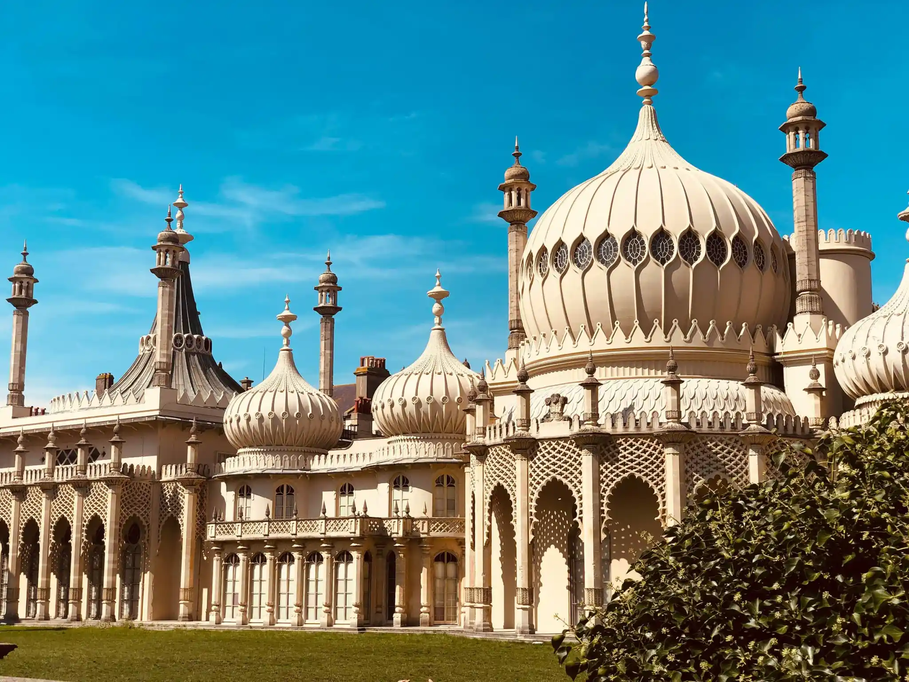
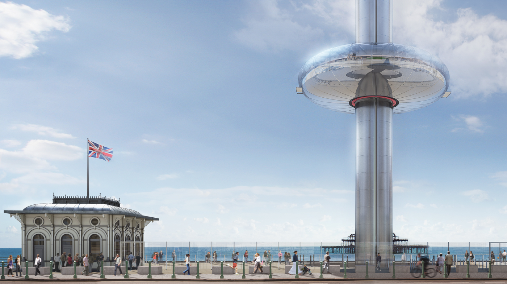
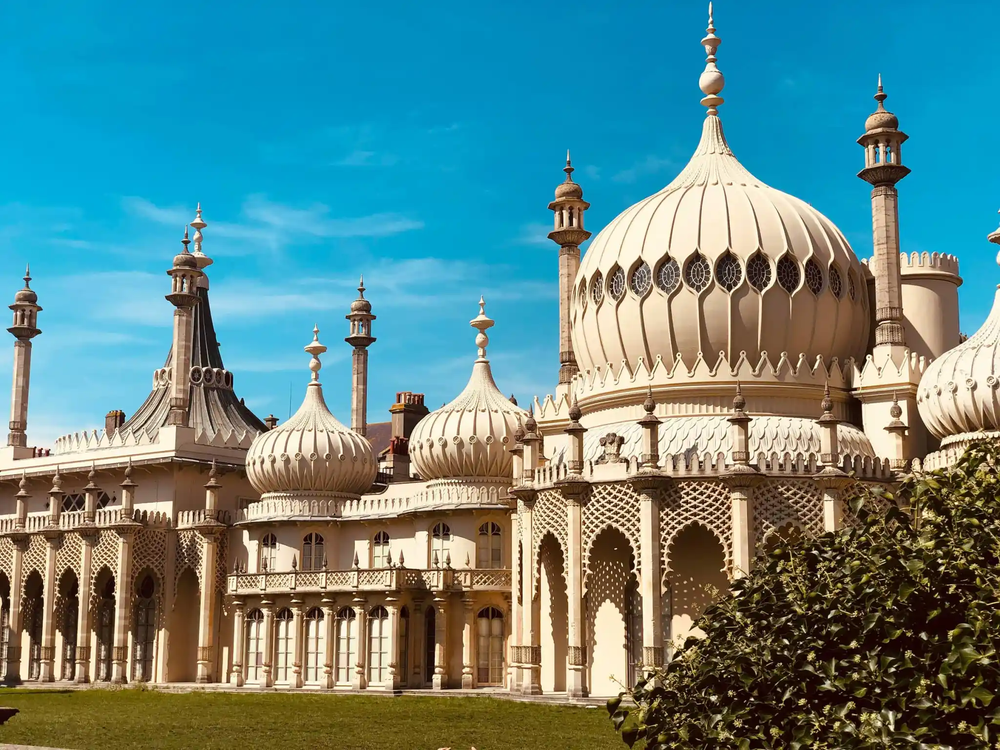
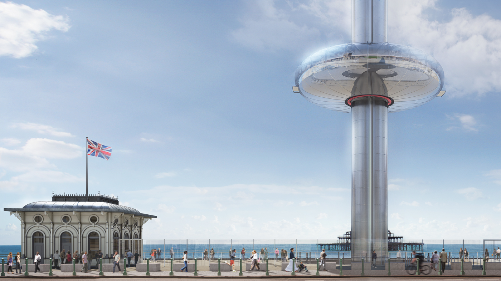
Worthing, Reino Unido
Uma charmosa cidade costeira no sul da Inglaterra, Worthing é ideal para quem busca um ambiente mais tranquilo e seguro para estudar, sem abrir mão das belezas naturais. Com uma orla marítima deslumbrante e um calçadão extenso, é perfeita para relaxar e aproveitar a brisa do mar.
- Ambiente pacífico e seguro
- Píer vitoriano e praias tranquilas
- Comunidade acolhedora e familiar
Canterbury, Reino Unido
Uma cidade histórica e universitária, Canterbury é mundialmente famosa por sua majestosa Catedral, Patrimônio Mundial da UNESCO. Oferece um ambiente acadêmico inspirador e uma rica imersão na história inglesa, ideal para quem aprecia a cultura e a tradição.
- Catedral de Canterbury e história medieval
- Atmosfera universitária vibrante
- Cidade compacta e fácil de explorar
 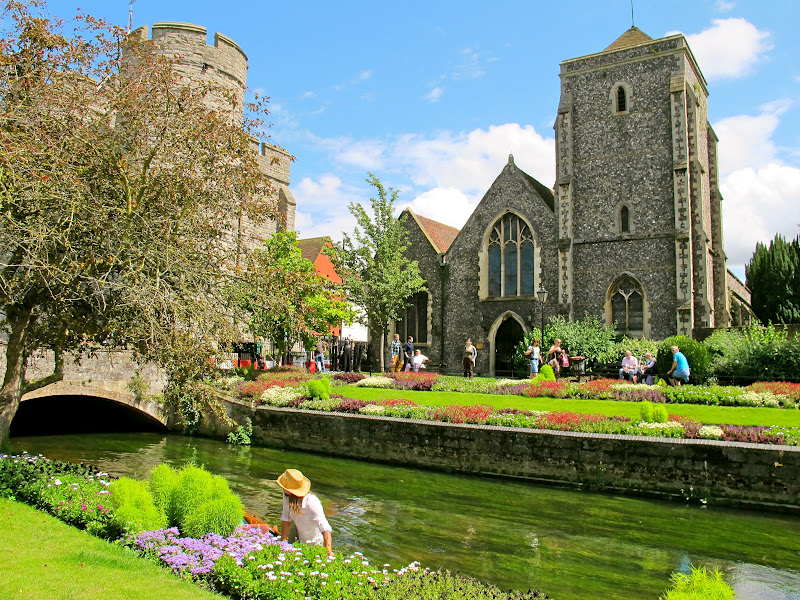
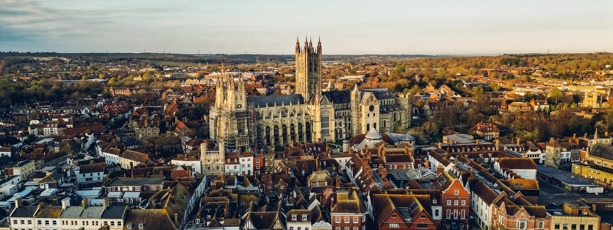
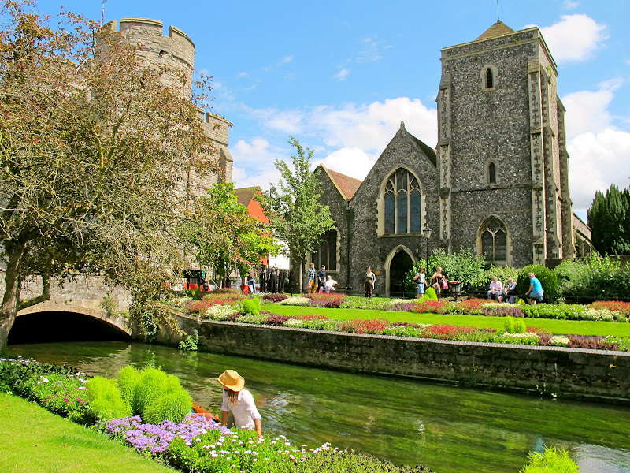
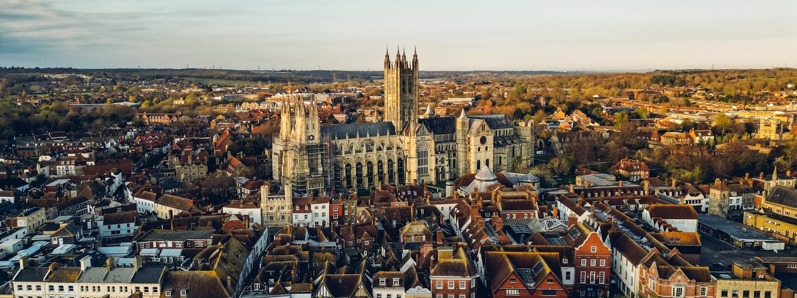
Oxford, Reino Unido
Lar da mais antiga universidade de língua inglesa, Oxford é um centro de excelência acadêmica e uma cidade de beleza arquitetônica ímpar. Mergulhe em um ambiente intelectual estimulante, com bibliotecas históricas, colégios impressionantes e uma atmosfera que respira conhecimento.
- Universidade de Oxford e legado acadêmico
- Arquitetura gótica e jardins deslumbrantes
- Museus e galerias de classe mundial
 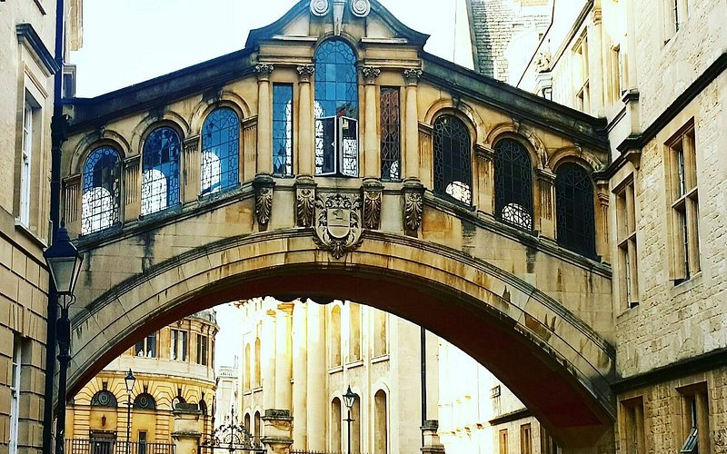
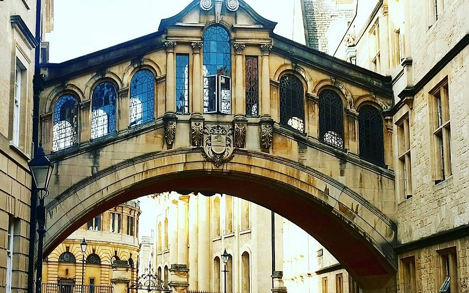
 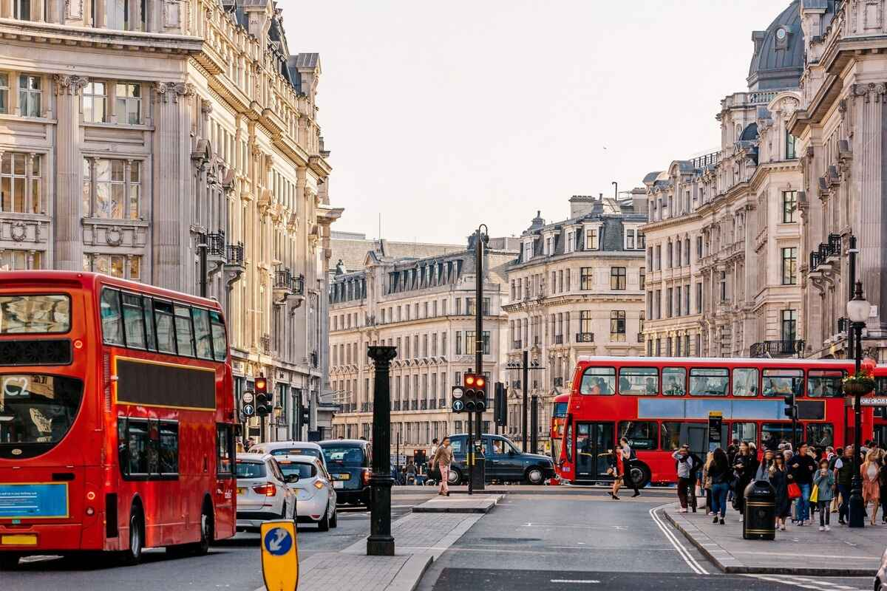
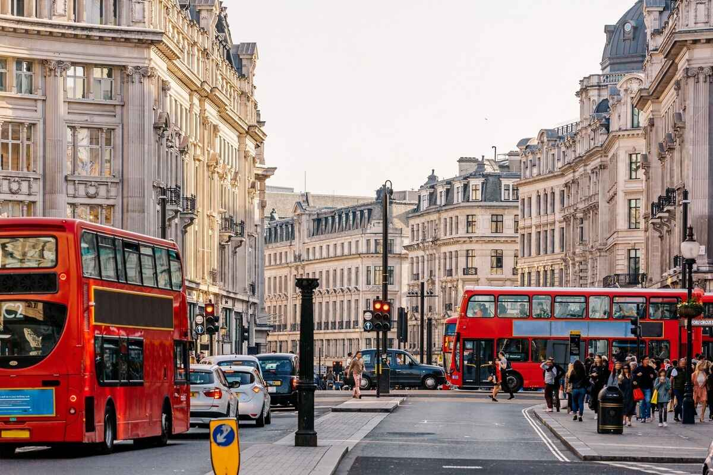
Bournemouth, Reino Unido
Uma das cidades costeiras mais populares do Reino Unido, Bournemouth é famosa por suas praias de areia dourada e seus exuberantes jardins. Oferece uma combinação perfeita de vida acadêmica ativa e um estilo de vida descontraído à beira-mar.
- Sete milhas de praias premiadas
- Parques e jardins vitorianos
- Atividades aquáticas e vida noturna